182/54 — 2 identische Quellen
Generated views reconstruct unseen anatomy; palette and proportions show smoother, broader rendering than native front. Not integrated or user approved.

41 native Idle-Sets / 58 identische Quellen; ein DET-Idle-Pilot; 75 neue DET-Schlafbilder. Technisch und visuell geprüft, mit dokumentierten Grenzen. Nicht integriert, nicht vom Nutzer abgenommen.
Prüfergebnis · Idle-Mapping · Schlaf-Mapping · Restumfang · Verworfene Entwürfe
Generated views reconstruct unseen anatomy; palette and proportions show smoother, broader rendering than native front. Not integrated or user approved.
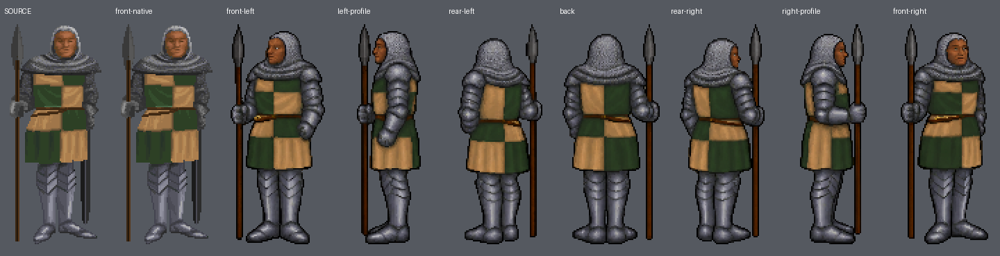
Generated views reconstruct unseen anatomy; palette and proportions show smoother, broader rendering than native front. Not integrated or user approved.; Left-hand spear checked. Beard detail weaker and chainmail/plate treatment nonuniform across views; armor consistency remains a candidate limitation.
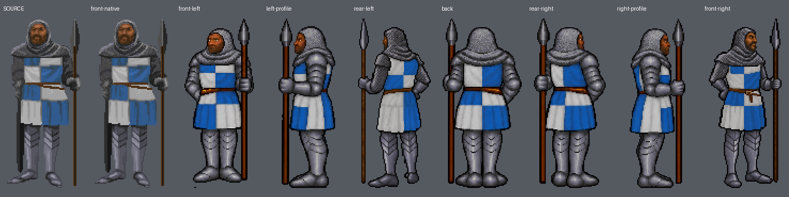
Generated views reconstruct unseen anatomy; palette and proportions show smoother, broader rendering than native front. Not integrated or user approved.
Generated views reconstruct unseen anatomy; palette and proportions show smoother, broader rendering than native front. Not integrated or user approved.

Generated views reconstruct unseen anatomy; palette and proportions show smoother, broader rendering than native front. Not integrated or user approved.; Small source gold ear hoop is omitted in generated views; face is smoother and broader. Identity-detail repair still needed.
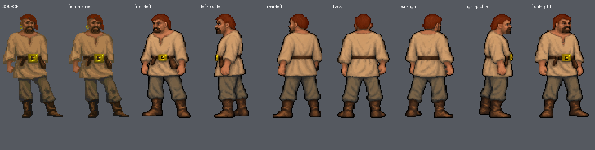
Generated views reconstruct unseen anatomy; palette and proportions show smoother, broader rendering than native front. Not integrated or user approved.
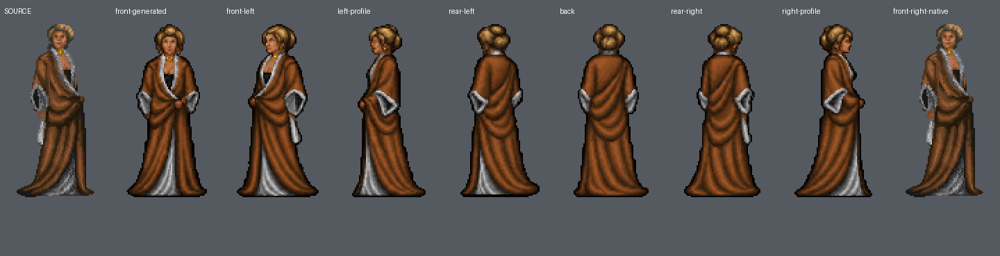
Generated views reconstruct unseen anatomy; palette and proportions show smoother, broader rendering than native front. Not integrated or user approved.
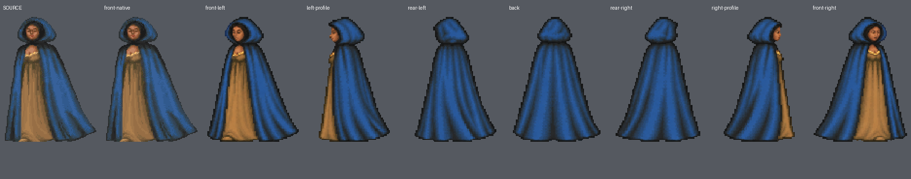
Generated views reconstruct unseen anatomy; palette and proportions show smoother, broader rendering than native front. Not integrated or user approved.
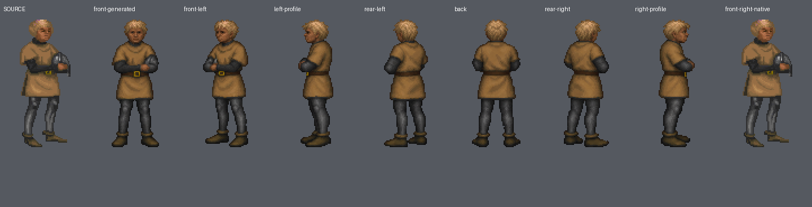
Generated views reconstruct unseen anatomy; palette and proportions show smoother, broader rendering than native front. Not integrated or user approved.; Quarter-front views 1/7 show weak torso-angle distinction from front; directional candidates, not certified exact 45-degree geometry.
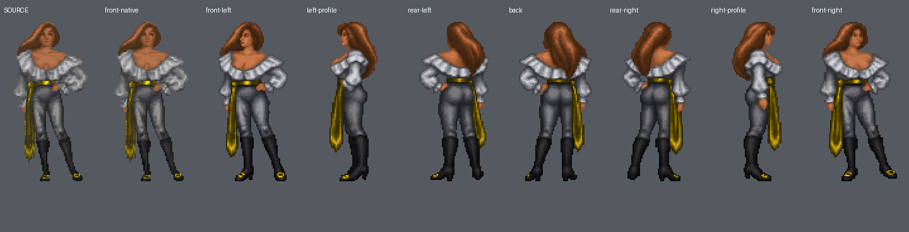
Generated views reconstruct unseen anatomy; palette and proportions show smoother, broader rendering than native front. Not integrated or user approved.
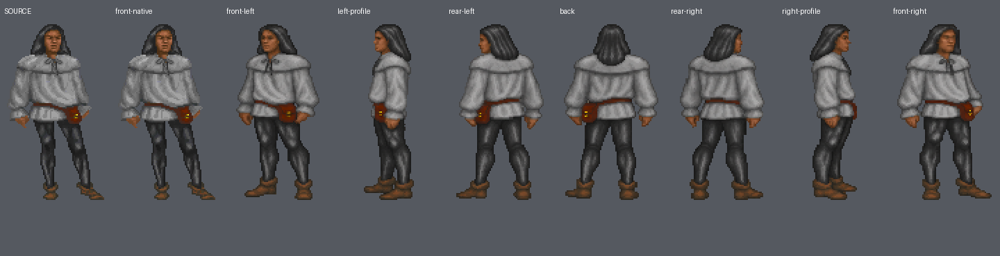
Generated views reconstruct unseen anatomy; palette and proportions show smoother, broader rendering than native front. Not integrated or user approved.; Quarter-front views 1/7 show weak torso-angle distinction from front; directional candidates, not certified exact 45-degree geometry.
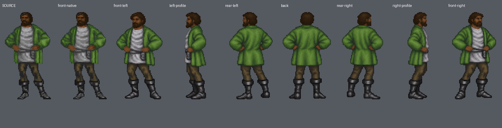
Generated views reconstruct unseen anatomy; palette and proportions show smoother, broader rendering than native front. Not integrated or user approved.; Corrected isolated view1 is coarser and narrower than the other generated views; style consistency remains a candidate limitation.; Quarter-front views 1/7 show weak torso-angle distinction from front; directional candidates, not certified exact 45-degree geometry.
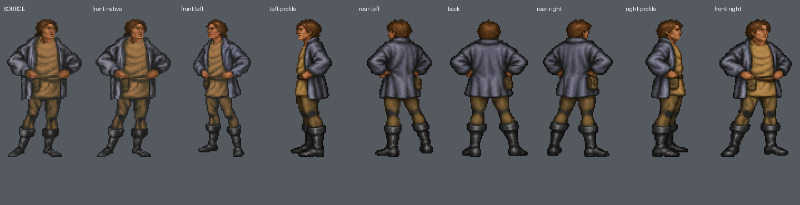
Generated views reconstruct unseen anatomy; palette and proportions show smoother, broader rendering than native front. Not integrated or user approved.; Quarter-front views 1/7 show weak torso-angle distinction from front; directional candidates, not certified exact 45-degree geometry.
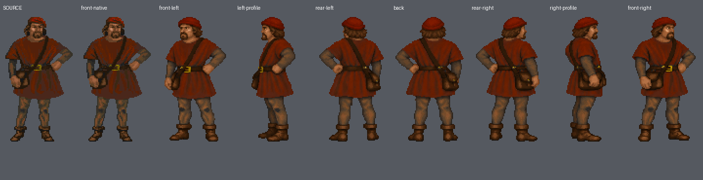
Generated views reconstruct unseen anatomy; palette and proportions show smoother, broader rendering than native front. Not integrated or user approved.
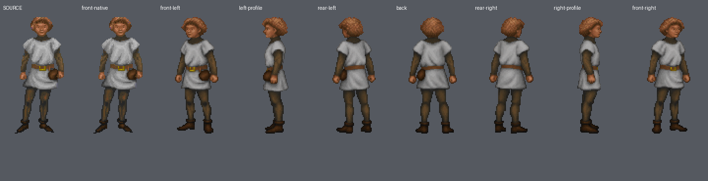
Generated views reconstruct unseen anatomy; palette and proportions show smoother, broader rendering than native front. Not integrated or user approved.; Corrected right-front view7 preserves right-hand pail but has a fuller body and more detailed face than other views; source original at front-left1 retained.
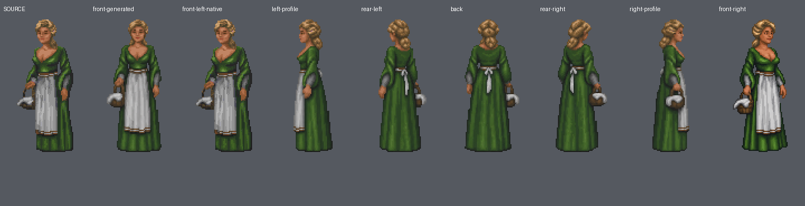
Generated views reconstruct unseen anatomy; palette and proportions show smoother, broader rendering than native front. Not integrated or user approved.
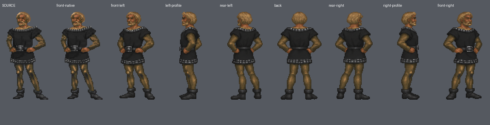
Generated views reconstruct unseen anatomy; palette and proportions show smoother, broader rendering than native front. Not integrated or user approved.; Corrected views1/5 preserve left-hand purse and far-side occlusion; their coarse texture and proportions differ mildly from initial atlas views.
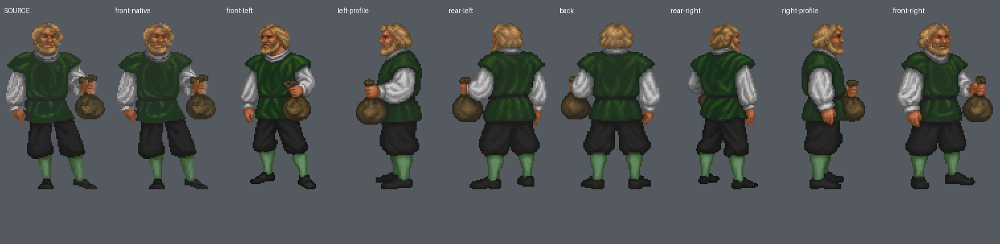
Generated views reconstruct unseen anatomy; palette and proportions show smoother, broader rendering than native front. Not integrated or user approved.; Isolated corrected angle uses coarser pixel blocks than remaining atlas; texture consistency remains a candidate limitation.
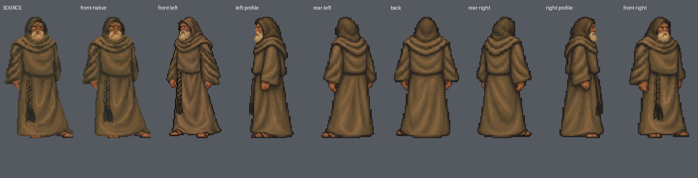
Generated views reconstruct unseen anatomy; palette and proportions show smoother, broader rendering than native front. Not integrated or user approved.; Isolated corrected angle uses coarser pixel blocks than remaining atlas; texture consistency remains a candidate limitation.
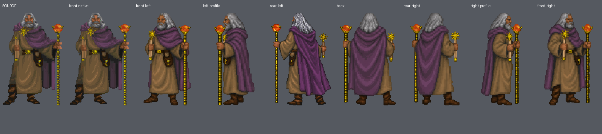
Generated views reconstruct unseen anatomy; palette and proportions show smoother, broader rendering than native front. Not integrated or user approved.; Corrected views3/7 preserve right-hand broom but are slightly broader/coarser than initial atlas views.
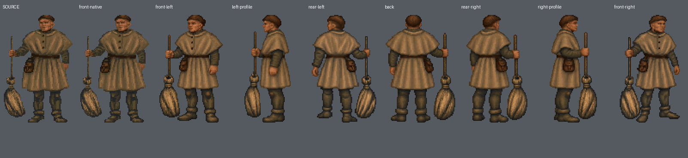
Generated views reconstruct unseen anatomy; palette and proportions show smoother, broader rendering than native front. Not integrated or user approved.
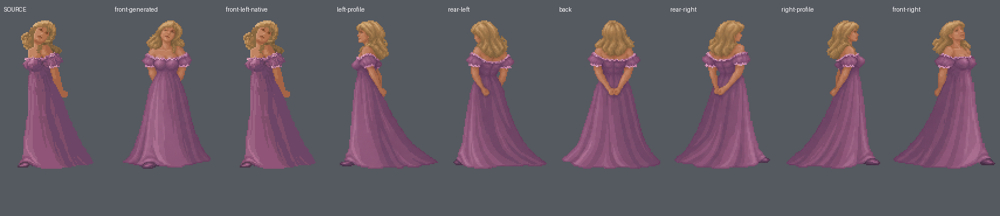
Generated views reconstruct unseen anatomy; palette and proportions show smoother, broader rendering than native front. Not integrated or user approved.
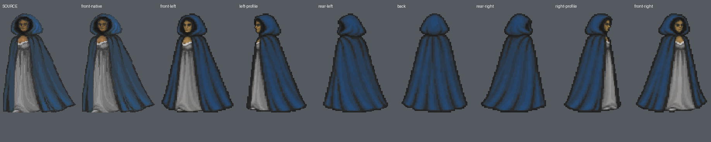
Generated views reconstruct unseen anatomy; palette and proportions show smoother, broader rendering than native front. Not integrated or user approved.
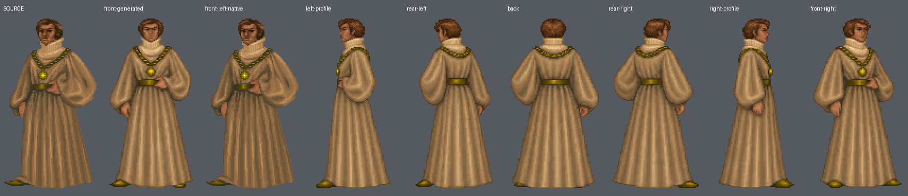
Generated views reconstruct unseen anatomy; palette and proportions show smoother, broader rendering than native front. Not integrated or user approved.; Corrected front-right7 is coarser with weaker torso-angle distinction than strict 45 degrees; chainmail and beard detail reconstructed, not original pixels.
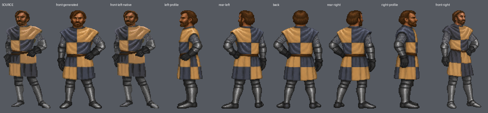
Generated views reconstruct unseen anatomy; palette and proportions show smoother, broader rendering than native front. Not integrated or user approved.; Corrected front-right7 restores anatomical right arm down and left hand at hip; its coarser texture and fuller figure differ from other generated angles.
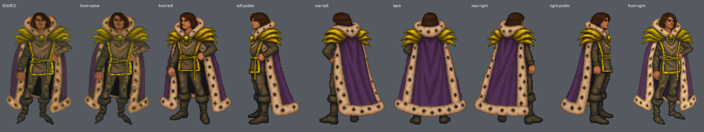
Generated views reconstruct unseen anatomy; palette and proportions show smoother, broader rendering than native front. Not integrated or user approved.
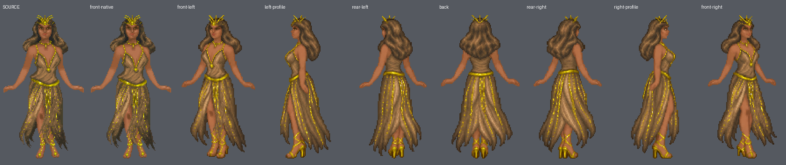
Generated views reconstruct unseen anatomy; palette and proportions show smoother, broader rendering than native front. Not integrated or user approved.; Corrected views1/6 restore leftward body bearing and right-hand rapier in profile; their texture is coarser and blade length in profile6 shorter than source.
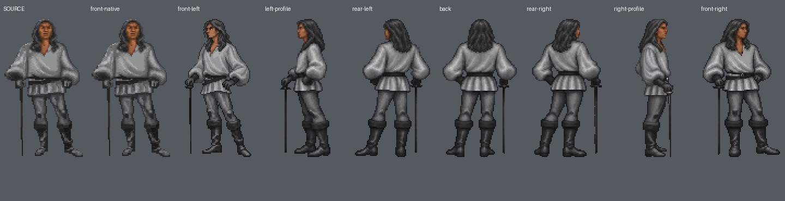
Generated views reconstruct unseen anatomy; palette and proportions show smoother, broader rendering than native front. Not integrated or user approved.; Active playing pose replaced by quiet lowered-recorder idle. Corrected views1/5 have coarser texture and different feather/recorder details; source posture and original asset remain separate.
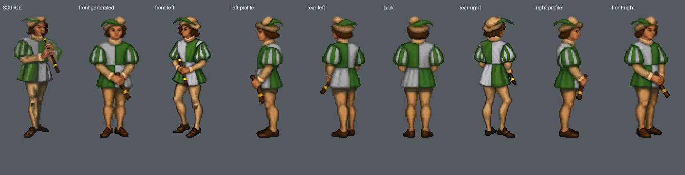
Generated views reconstruct unseen anatomy; palette and proportions show smoother, broader rendering than native front. Not integrated or user approved.; Standing anatomy and128px height reconstructed from seated56x61 source. Orange-brown cradled object remains semantically ambiguous; generated version resembles a small doll/animal and is not certified exact identity. No original standing direction exists.
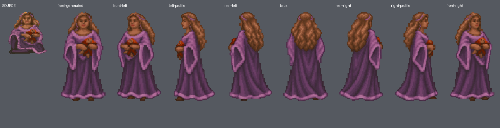
Generated views reconstruct unseen anatomy; palette and proportions show smoother, broader rendering than native front. Not integrated or user approved.; Corrected views1/5/6 restore leftward quarter, far-side left staff and right profile. Their crown/beard and cape proportions vary from initial atlas; front-left1 torso distinction remains weak, not certified exact45degrees. Rope-end positioning reconstructed.
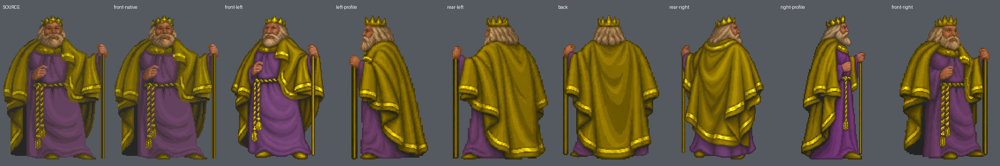
Generated views reconstruct unseen anatomy; palette and proportions show smoother, broader rendering than native front. Not integrated or user approved.; Original oblique view7 retained; corrected views1/3, isolated back4 and remapped profiles restore bearings. Ornate serpent/bird embroidery is reconstructed, coarser and simplified; exact emblem geometry not certified. Isolated back4 has smaller head/narrower body and longer cape proportions than other views; consistency repair remains.
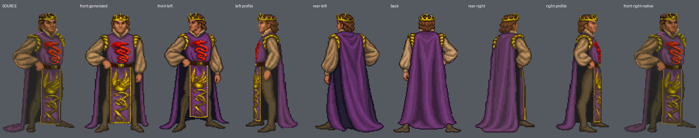
Generated views reconstruct unseen anatomy; palette and proportions show smoother, broader rendering than native front. Not integrated or user approved.; Generated figure is broader and coat longer than original front-left source; gold border ornament and goatee reconstructed.
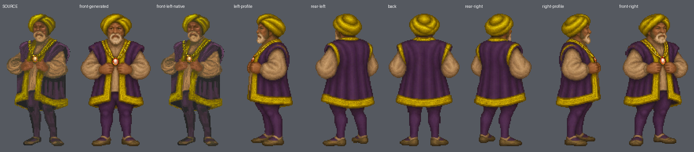
Generated views reconstruct unseen anatomy; palette and proportions show smoother, broader rendering than native front. Not integrated or user approved.; Corrected front-left1 is coarser and fuller than other views; right hand at chest, left hanging arm preserved. Gold border ornament simplified; original sourcefront-right7 retained.
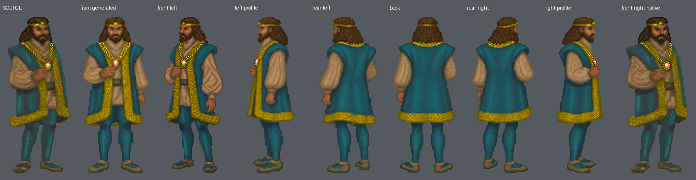
Generated views reconstruct unseen anatomy; palette and proportions show smoother, broader rendering than native front. Not integrated or user approved.; Silver hair back arrangement and ermine spots reconstructed; source red ring is tiny and not consistently legible in generated angles. Original front-right7 preserved.
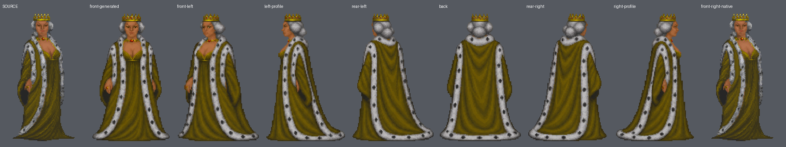
Generated views reconstruct unseen anatomy; palette and proportions show smoother, broader rendering than native front. Not integrated or user approved.; Corrected1/2/6 retain pale cream right-hand fan-like object, whose exact kind is ambiguous in source. Corrected angles have different head/body proportions and simpler gold ornament; originalfront-right7 preserved.
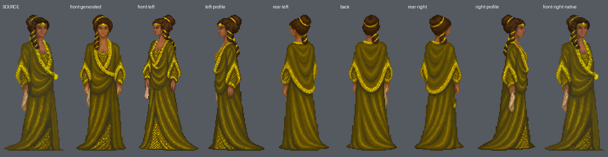
Generated views reconstruct unseen anatomy; palette and proportions show smoother, broader rendering than native front. Not integrated or user approved.; Corrected1/3 preserve leftward body and right-hand pale object with far-side occlusion. Object kind ambiguous; corrected figures are fuller and hood/drapery simplified. Originalfront-right7 preserved.
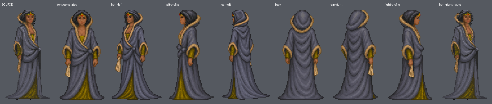
Generated views reconstruct unseen anatomy; palette and proportions show smoother, broader rendering than native front. Not integrated or user approved.; Left-hand book continuity checked; pageedge shape and brown cloth texture reconstructed. Generated face narrower than original and robe folds smoother.
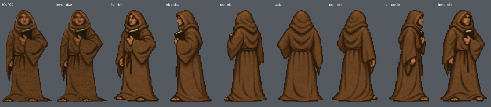
Generated views reconstruct unseen anatomy; palette and proportions show smoother, broader rendering than native front. Not integrated or user approved.; Source right arm occluded; behind-torso pose inferred. Corrected0/1/5 restore genuinefront/leftquarter and left-side slit/sleeve. Corrected views have fuller anatomy and neckline/hem differences; originalfront-right7 retained.
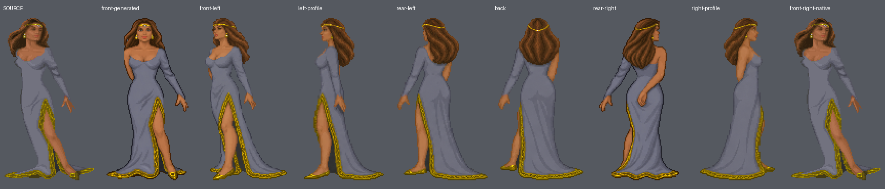
Generated views reconstruct unseen anatomy; palette and proportions show smoother, broader rendering than native front. Not integrated or user approved.; Short stocky anatomy retained; correctedfront-left1 is coarser and slightly taller in body proportions. Source cloak-train and epaulet details reconstructed, originalfront-right7 retained.
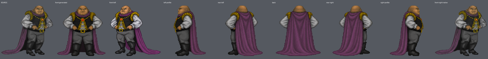
Generated views reconstruct unseen anatomy; palette and proportions show smoother, broader rendering than native front. Not integrated or user approved.; Hunched posture and left-hand staff retained, correctedrear-right5 coarser with thicker hair and changed robe folds. Originalfront-right7 preserved; exact unseen anatomy reconstructed.
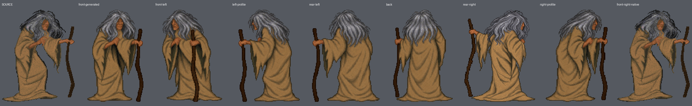
Generated views reconstruct unseen anatomy; palette and proportions show smoother, broader rendering than native front. Not integrated or user approved.; Correctedrear-left3 coarser with slimmer robe/body than atlas views; generated alternate heads exaggerate long nose, chin and bald patch relative to nativefront. Dirtyblond hair, raggedrobe and rope retained, exact facial identity limited.
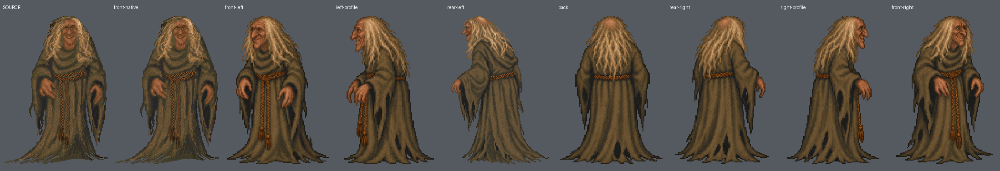
Goldenes Augen-/Brillendetail nicht exakt erhalten.

68 reviewable, sieben mit Identitätsgrenzen. Grüne Decke deckt Hals bis Fuß; weiße Kissen; Augen geschlossen geprüft. Seiten enthalten Originalreferenzen.